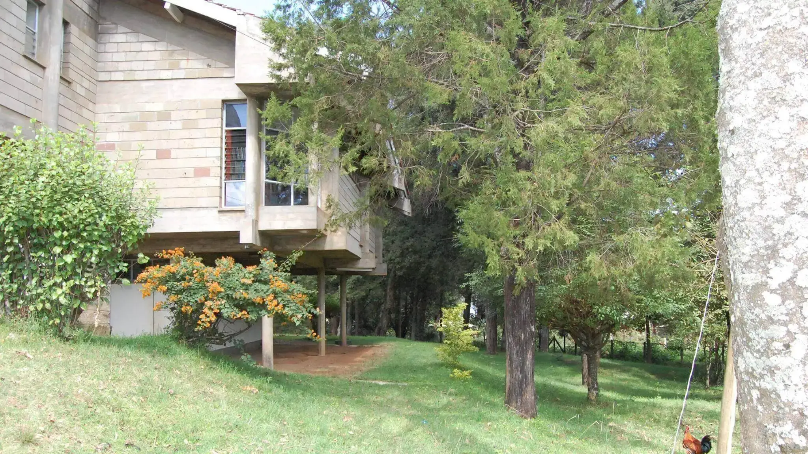
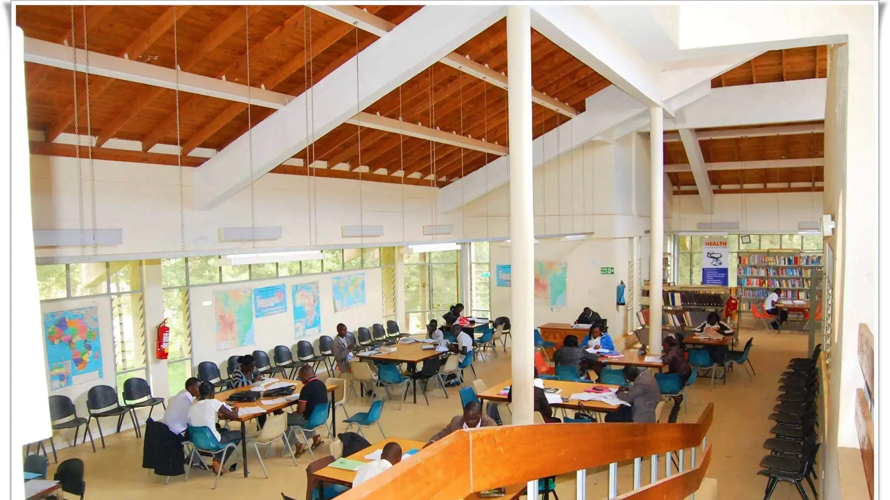
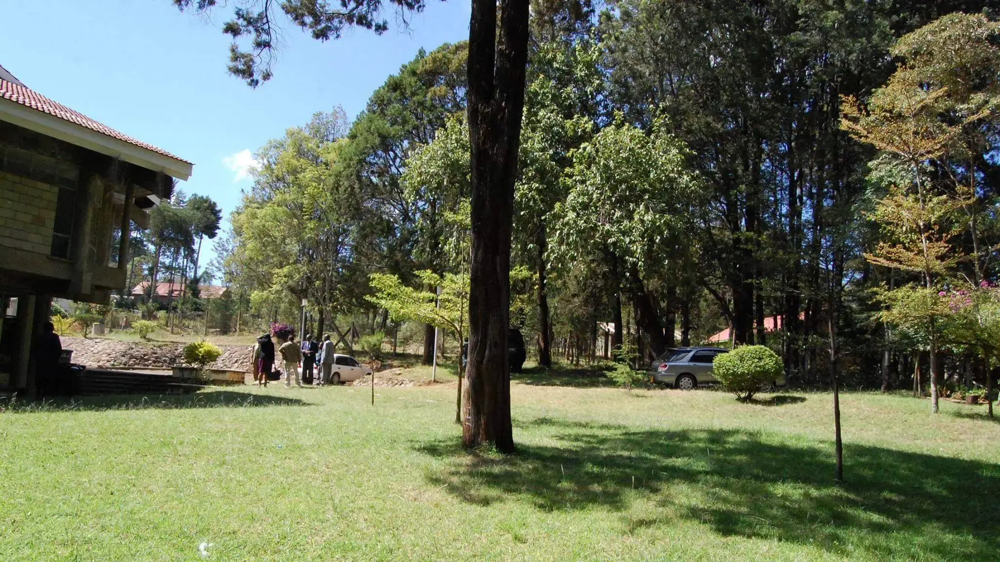
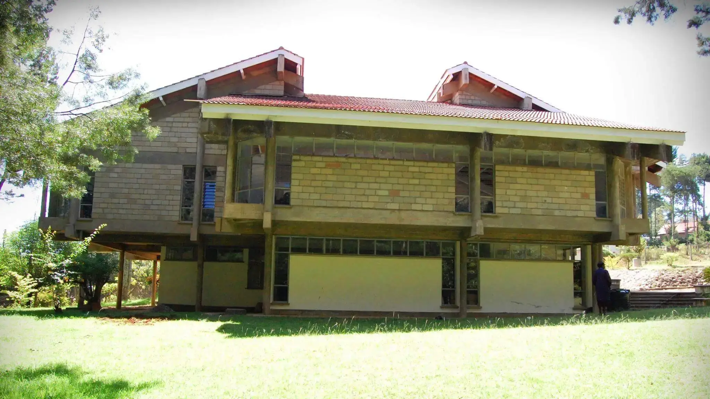

James from James’ Coffee Blog wrote The Joy of Bookshops and just the title sparked something within me inspiring this piece.
I barely frequent bookshops or libraries. Actually, I don’t think I remember the last time I was in one despite being an avid reader but when I try to recall them, I get pleasant memories. It’s a fact that they were becoming less popular worldwide but perhaps the only good thing out of TikTok is that BookTok has rekindled reading.
My experience and memories with libraries is more about the emotions and sensation than even the books themselves - which is odd.
When I was a kid I used to visit shagz (grandparent’s hometown) over the holidays. Days would be spent reconnecting with cousins, telling stories, walking around the town and other typical activities but sometimes I went to the library. This was the only public library in my shagz. It was grand and it felt like being transported to a different world when you walk in.




The area was secluded among trees, it was calm with mostly the sounds of birds and nature and out of this serene environment sprang this stone library. I remember the lady at the front desk was not too welcoming but that would never dampen my joy. The building inside was massive with different sections depending on your age. I always wanted to explore the big boys section, and I did sometimes, but the front desk lady had a keen eye. There were books and more books towering over my younger self, you would think that was the entire knowledge base of the world but thank god I was wrong.
Maybe I'm nostalgic with clouded memory and perhaps the library might not have the same feel to it, but the experience was glorious back then.
Back in primary school, one of the schools I was at was still new and expanding and as such we had this tiny library. That’s an overstatement, it was more of a small room you borrowed from but didn’t overstay your welcome. There were books everywhere, on the shelves and piles on the floor. At some point we had a requirement to read a certain number of books every week and have a short synopsis of them so this was somewhere I frequented. The place might have seemed claustrophobic but that was far from what I felt. It’s like getting a big tight hug or having a cup of hot chocolate when it’s cold outside.
This experience isn’t just with physical libraries, I enjoy books based on experiences at bookshops or libraries. Japanese books have beautiful covers and a subset within them are books with bookshops on the cover. It’s basically a cheat code to have me read something, I mean that’s how Satoshi Yagisawa got me to read Days at The Morisaki Bookshop.
I know this might not be representative of everyone’s experience with bookshops or libraries but these places are cozy and welcoming.
If only they sold coffee then perhaps they might be profitable cause nothing beats reading with your favourite hot beverage by the side. Paired up with the woody smell of old books, the moody lighting, the mosaic of textures when you run your fingers along book spines and the perfectly damped soundscape as if the books conspired to hush every sound that dared to intrude. It’s a feeling that fully envelopes you and tingles all your senses, and boy oh boy would I want more of them in Kenya.